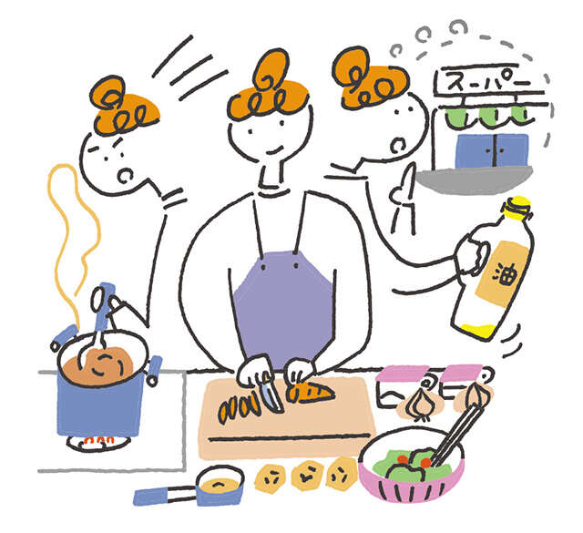

只要稍微改变一下你的思维方式，甚至你的日常生活也可以成为能量的来源。这次，我们从东京都保健老年中心医学博士岩切里香博士那里了解到了这样的“新想法”。 “每天发现一些东西，而不必过度害怕变化，对于预防虚弱（与衰老相关的身心活力下降）和痴呆症来说是完美的。兴奋是能量的来源，”岩切博士说。请尝试一下。
将家务视为大脑锻炼
家务活需要你思考接下来要做什么并动动手。同时进行的多项任务会激活大脑。尤其是做饭的时候，有很多“我要灭火”、“我要马上切菜”、“我要买XX”等步骤，所以这是对大脑的高度训练。尝试新的菜单项目也很好。当涉及到其他家务时，最好同时做清洁和洗衣等事情，而不是一次只专注于一件事。如果你的大脑和身体因做日常家务而感到疲劳，你就不太可能失眠。
用于烹饪
想想菜单
→去买食材（出去的理由）
→考虑烹饪方法和烹饪顺序。
→切割、烘烤和烹饪原料
→思考演示文稿
→完成

●同时做多项任务可以训练额叶。
用于清洁/洗衣
查看天气预报
→选择与地点和材料相匹配的清洁剂和工具。
→清洁/洗衣
清洁：垃圾分类、将物品放回原处等。
洗衣：烘干、收纳、折叠、整理

●保持周围环境清洁对您与他人的互动有积极的影响。